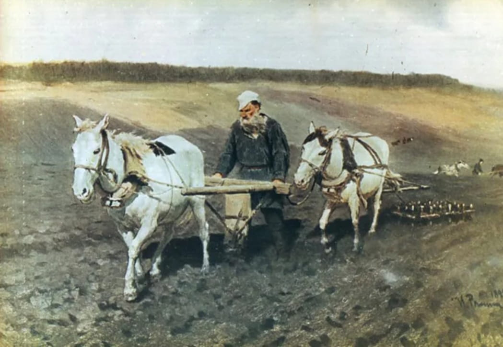
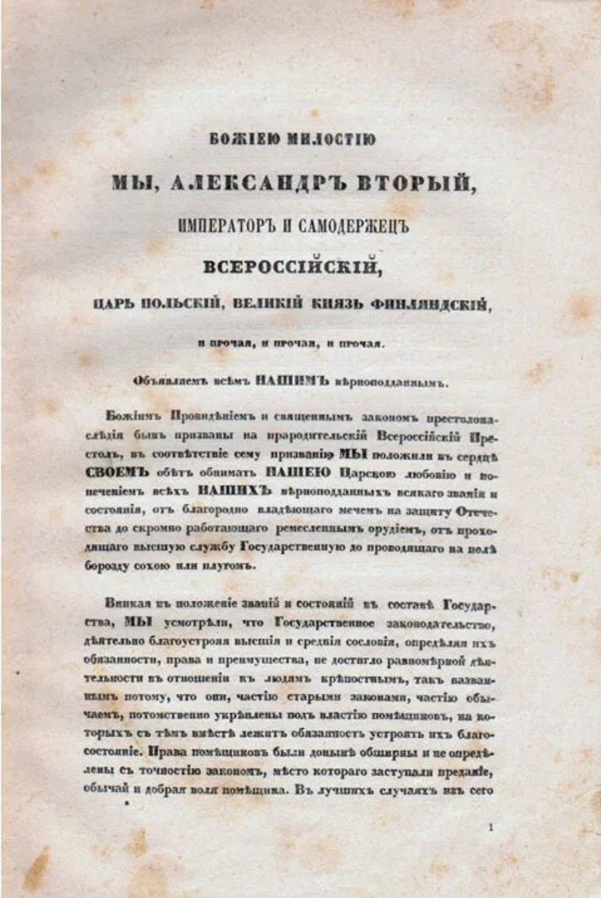
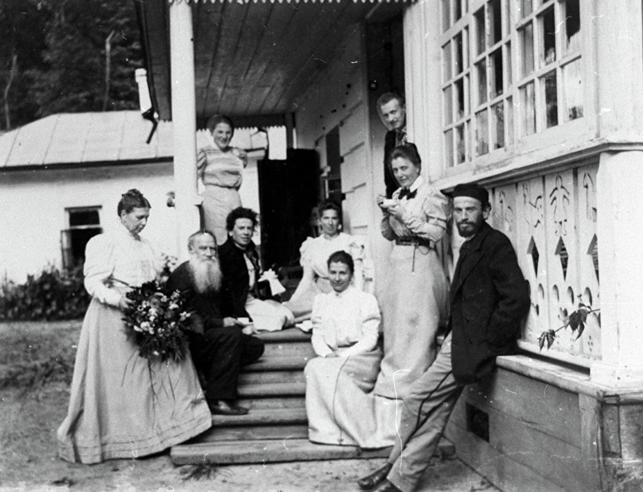

Крестьянский труд в понимании Толстого
Сам он гордился тем, что всю свою жизнь провел за пределами города, в поместье, где пахал землю и сажал деревья.

Сад Толстого был признан самым большим среди садов Европы.
Часто Лев Николаевич в своих письмах близким людям признавался, что работа пахаря
очень его привлекает, помогает отвлечься, расслабиться. И даже «правильно думать».
Толстой работал сохой и называл ее самым легким орудием для землепашества. Лев Николаевич относился к крепостным крестьянам с большим уважением.

Также писатель-помещик обращал внимание на то, что каждый крестьянин привязан к своей земле, словно кровными узами. Поэтому Лев Николаевич сильно восставал против купли-продажи земли и овладения ею в качестве частной собственности. Он считал, что земельные участки не должны были принадлежать ни государству, ни помещикам, но вся земля — Божья.
Толстой призывал к тому, чтобы люди владели землей по взаимному согласию, не на правах собственности или арендаторов. Так как, если бы земля находилась в собственности крестьян, то это мешало бы «свободе пользования». Как раз в годы жизни Толстого усиливалось волнение от крестьянского движения, приближалась реформа 1861 года.

Лев Николаевич все больше осознавал, что крепостное
право является злом для России и крестьян. Однако крестьянского восстания писатель
не поддержал, видя в этом обман народа.
Имение Ясная Поляна досталось отцу писателя Николаю не по наследству. Дело в том, что недальновидный дед оставил своему сыну только целую кучу долгов. Поэтому отцу Толстого пришлось взять в жены девушку с богатым приданым, коей являлась Мария Волконская. Это был брак по расчету. Имение Ясная Поляна

как раз было частью приданого.
Вместе с ним причиталось еще 800 душ крепостных крестьян. После того как родителей
не стало, имущество было поделено и Льву Николаевичу было отдано имению и 330 душ.
Спустя 2 года Толстой принял решение открыть в Ясной Поляне школу для своих крепостных. Сам же и преподавал там. Позднее ему стали помогать члены его семьи. Система образования в этой школе сильно отличалась от привычной, формальной. Жесткой дисциплины не существовало, но эффективность обучения была довольно высокой. Яснополянская школа помогала развивать творческие способности, мыслить практично. школу для своих крепостных. Задачки не были отвлеченными и громоздкими, но все были приведены из повседневной жизни. Дети обучались в спокойной и простой обстановке. Из этого видно, что Толстой очень любил своих крестьян и относился к ним как к равным по положению.
По прошествии еще 7 лет в 1956 году Толстой предложил своим крепостным получить вольную и право земельной собственности. Но крестьяне все же отказались. Причина заключалась, скорее всего, в недоверии. Толстому же объяснили, что будут служить так, как привыкли, по-старому.